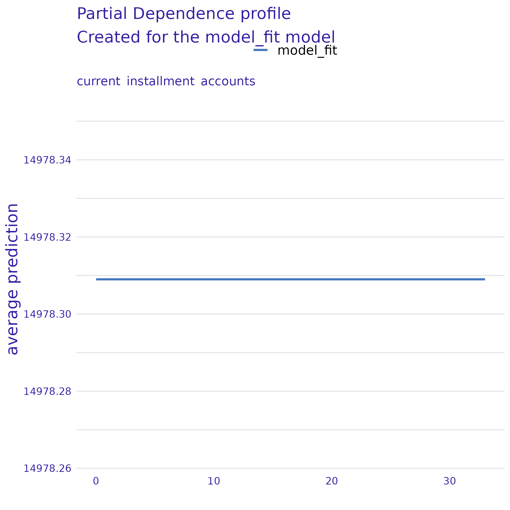

Feature: balance
Get this object: archivist::loadFromLocalRepo(md5hash = "dac3534959c1382cc6cd66460f83de3e", repoDir = "tidy_models_explainer_output/repository")
Feature: installment

Get this object: archivist::loadFromLocalRepo(md5hash = "b99bfd2e6a9f4d4319ffd91dd89939cb", repoDir = "tidy_models_explainer_output/repository")
Feature: paid_total
Get this object: archivist::loadFromLocalRepo(md5hash = "6c434281d7982a361ffa4b2d7ef3da39", repoDir = "tidy_models_explainer_output/repository")
Feature: paid_interest
Get this object: archivist::loadFromLocalRepo(md5hash = "b1e136e99a1c2263f8452fe3be13eda0", repoDir = "tidy_models_explainer_output/repository")
Feature: interest_rate
Get this object: archivist::loadFromLocalRepo(md5hash = "478b8a4f603c621f6c97e53f14463976", repoDir = "tidy_models_explainer_output/repository")
Feature: paid_principal
Get this object: archivist::loadFromLocalRepo(md5hash = "208cb62ce5b8fe8da51d585a9ff051c9", repoDir = "tidy_models_explainer_output/repository")
Feature: total_debit_limit
Get this object: archivist::loadFromLocalRepo(md5hash = "d6c16265b58dcfc9a7ae19aa539b311d", repoDir = "tidy_models_explainer_output/repository")
Feature: annual_income
Get this object: archivist::loadFromLocalRepo(md5hash = "d591ee3ed0c27e332e4b12f800462e70", repoDir = "tidy_models_explainer_output/repository")
Feature: annual_income_joint
Get this object: archivist::loadFromLocalRepo(md5hash = "6593ed3a086753cfb8d2d373b3b24477", repoDir = "tidy_models_explainer_output/repository")
Feature: emp_length
Get this object: archivist::loadFromLocalRepo(md5hash = "278834946a402df4b0f47f06d99c4097", repoDir = "tidy_models_explainer_output/repository")
Feature: term
Get this object: archivist::loadFromLocalRepo(md5hash = "7dcec44b67b78eda4b43fc558435bf69", repoDir = "tidy_models_explainer_output/repository")
Feature: months_since_last_delinq
Get this object: archivist::loadFromLocalRepo(md5hash = "5334707222e21bbfe7f5b6f97c093187", repoDir = "tidy_models_explainer_output/repository")
Feature: homeownership
Get this object: archivist::loadFromLocalRepo(md5hash = "8409631f2b28ca76b27ea7ec125a7108", repoDir = "tidy_models_explainer_output/repository")
Feature: debt_to_income
Get this object: archivist::loadFromLocalRepo(md5hash = "3adc0ebdcfb152c66872970cd2ed4aba", repoDir = "tidy_models_explainer_output/repository")
Feature: debt_to_income_joint

Get this object: archivist::loadFromLocalRepo(md5hash = "9a5ec0727a5ad518c135b4c43fd5580a", repoDir = "tidy_models_explainer_output/repository")
Feature: verified_income
Get this object: archivist::loadFromLocalRepo(md5hash = "54b5b2655c89ab0b42221634bfc27fa4", repoDir = "tidy_models_explainer_output/repository")
Feature: verification_income_joint
Get this object: archivist::loadFromLocalRepo(md5hash = "8a6fb559302f7296119d4bb5201dfbdb", repoDir = "tidy_models_explainer_output/repository")
Feature: months_since_90d_late
Get this object: archivist::loadFromLocalRepo(md5hash = "9d1420f6a629e7c945743929ab9426e2", repoDir = "tidy_models_explainer_output/repository")
Feature: num_active_debit_accounts
Get this object: archivist::loadFromLocalRepo(md5hash = "7df18bb1d0468b8d4116204bad69428f", repoDir = "tidy_models_explainer_output/repository")
Feature: state
Get this object: archivist::loadFromLocalRepo(md5hash = "f9ff972e4d11aee63af06afab0285415", repoDir = "tidy_models_explainer_output/repository")
Feature: delinq_2y
Get this object: archivist::loadFromLocalRepo(md5hash = "aa9e03cfe61faa0a462c4f9e3dd507ac", repoDir = "tidy_models_explainer_output/repository")
Feature: num_collections_last_12m
Get this object: archivist::loadFromLocalRepo(md5hash = "795af255c57fafe0358b2468c04ae626", repoDir = "tidy_models_explainer_output/repository")
Feature: num_historical_failed_to_pay
Get this object: archivist::loadFromLocalRepo(md5hash = "f4343f66f861f244b98140248c905e7b", repoDir = "tidy_models_explainer_output/repository")
Feature: current_accounts_delinq
Get this object: archivist::loadFromLocalRepo(md5hash = "54e78444ab4ccaae7da2f81a6e2e60da", repoDir = "tidy_models_explainer_output/repository")
Feature: total_collection_amount_ever
Get this object: archivist::loadFromLocalRepo(md5hash = "a5d2aa7120d903050ee6012645b4fd7b", repoDir = "tidy_models_explainer_output/repository")
Feature: current_installment_accounts
Get this object: archivist::loadFromLocalRepo(md5hash = "870f4d2f5a74e20953023e7a58cc1821", repoDir = "tidy_models_explainer_output/repository")
Feature: num_accounts_120d_past_due
Get this object: archivist::loadFromLocalRepo(md5hash = "db7528c8d1a475cb00e23cfb3e5473c8", repoDir = "tidy_models_explainer_output/repository")
Feature: num_accounts_30d_past_due
Get this object: archivist::loadFromLocalRepo(md5hash = "760c39b3fa2a468372fe55a5dc82fe4e", repoDir = "tidy_models_explainer_output/repository")
Feature: tax_liens
Get this object: archivist::loadFromLocalRepo(md5hash = "b38aac070610e893e06a5614ae193bd7", repoDir = "tidy_models_explainer_output/repository")
Feature: public_record_bankrupt
Get this object: archivist::loadFromLocalRepo(md5hash = "7cba2f06e0a038470ca53a670fd0b294", repoDir = "tidy_models_explainer_output/repository")
Feature: loan_purpose
Get this object: archivist::loadFromLocalRepo(md5hash = "7dca7449af91e53955f6cd53788ca83b", repoDir = "tidy_models_explainer_output/repository")
Feature: application_type
Get this object: archivist::loadFromLocalRepo(md5hash = "10294371fdfe3e87b9a89be391766253", repoDir = "tidy_models_explainer_output/repository")
Feature: loan_amount
Get this object: archivist::loadFromLocalRepo(md5hash = "55772d6813459d67eada60134546e4b8", repoDir = "tidy_models_explainer_output/repository")
Feature: grade
Get this object: archivist::loadFromLocalRepo(md5hash = "c59cf8322e2ad2f0c7cd061f3a74e5da", repoDir = "tidy_models_explainer_output/repository")
Feature: sub_grade
Get this object: archivist::loadFromLocalRepo(md5hash = "70bb8730faea76ce6deb3980819750d9", repoDir = "tidy_models_explainer_output/repository")
Feature: loan_status
Get this object: archivist::loadFromLocalRepo(md5hash = "19109dec33f1cf02e3a28e2c47905d3a", repoDir = "tidy_models_explainer_output/repository")
Feature: initial_listing_status
Get this object: archivist::loadFromLocalRepo(md5hash = "ffbef86e231e5e551d4b7f35565ee4ee", repoDir = "tidy_models_explainer_output/repository")
Feature: disbursement_method

Get this object: archivist::loadFromLocalRepo(md5hash = "0183a0a5ddb181f7ebd2188e19df02dc", repoDir = "tidy_models_explainer_output/repository")
Feature: paid_late_fees

Get this object: archivist::loadFromLocalRepo(md5hash = "fc318a14207da026e135094745a1099a", repoDir = "tidy_models_explainer_output/repository")
Feature: accounts_opened_24m
Get this object: archivist::loadFromLocalRepo(md5hash = "ea80d55ecbd8203b170262ed8470adf9", repoDir = "tidy_models_explainer_output/repository")
Feature: num_open_cc_accounts
Get this object: archivist::loadFromLocalRepo(md5hash = "2bab2fe3d3cf226e66ef72d9c54f9f37", repoDir = "tidy_models_explainer_output/repository")
Feature: num_satisfactory_accounts
Get this object: archivist::loadFromLocalRepo(md5hash = "aa379455e2b391aba2f5a38faf7a4326", repoDir = "tidy_models_explainer_output/repository")
Feature: num_total_cc_accounts
Get this object: archivist::loadFromLocalRepo(md5hash = "a7aa04237e2a4dbd88f0c071d200462c", repoDir = "tidy_models_explainer_output/repository")
Feature: earliest_credit_line
Get this object: archivist::loadFromLocalRepo(md5hash = "530ac5945fae482e6410ab2dc92d2e6c", repoDir = "tidy_models_explainer_output/repository")
Feature: account_never_delinq_percent
Get this object: archivist::loadFromLocalRepo(md5hash = "cdcd3f9cfe0d68afd91662f903b661e7", repoDir = "tidy_models_explainer_output/repository")
Feature: months_since_last_credit_inquiry
Get this object: archivist::loadFromLocalRepo(md5hash = "74dd168dc903e5edc2ad7d189963b536", repoDir = "tidy_models_explainer_output/repository")
Feature: num_mort_accounts
Get this object: archivist::loadFromLocalRepo(md5hash = "8e52088a3351fb89964acdd3b3c262d6", repoDir = "tidy_models_explainer_output/repository")
Feature: inquiries_last_12m
Get this object: archivist::loadFromLocalRepo(md5hash = "e7cb2fd0713700e8bfe3e66def47080c", repoDir = "tidy_models_explainer_output/repository")
Feature: open_credit_lines
Get this object: archivist::loadFromLocalRepo(md5hash = "9b31be156cf0657eddec9fe2b548234e", repoDir = "tidy_models_explainer_output/repository")
Feature: num_cc_carrying_balance
Get this object: archivist::loadFromLocalRepo(md5hash = "9129200d56133db88dc6ca9ab75455db", repoDir = "tidy_models_explainer_output/repository")
Feature: total_credit_utilized
Get this object: archivist::loadFromLocalRepo(md5hash = "0f1f4924b17f0081110e80c972a2ac49", repoDir = "tidy_models_explainer_output/repository")
Feature: total_credit_lines
Get this object: archivist::loadFromLocalRepo(md5hash = "d6869bc47d944cd706f4a702daee2b96", repoDir = "tidy_models_explainer_output/repository")